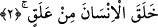

kelimesini zikredince buna bir de putların ortak olmadığı sıfatı, sıfatı eklemiş oldu.
2. O, insanı bir aşılanmış yumurtadan yarattı.
Yukarda yaratma fiili için bir geçişli, bir de geçişsiz şeklinde iki açıklamada
bulunmuştuk. Birinci ihtimale göre yâni herşeyi yaratanın, diğer yaratıklar arasında
insanı özel olarak zikretmesi, insanın bütün güzellikleri en güzel yansıtmakta benzersiz
ve bir başına olmasından dolayıdır. İkinci ihtimali bunca yaratık arasında sâdece
insanın vurgulanması insanın şanını yüceltmek içindir. Çünkü insanoğlu bu yaratıklar
içinde en şereflisidir. Kur’an, insanoğluna inmiştir, okumakla emredilen insanoğludur.
Âyette birinci fiil ile de insanın yaratılmış olmasının kasdedilmesi mümkündür. Eğer
böyle ise o zaman halk fiili önce kapalı olarak zikredilmiş, ardından da insanın fıtratını
yüceltmek için ifâdeye tefsir getirilmiştir deriz.
“Alak/kan pıhtısı” kelimesini ele alalım. Bu kelime; “aleka” kelimesinin çoğuludur.
Arapçada alak; donmuş, katılaşmış kan demektir ki biz buna pıhtı deriz. Kan pıhtı hâline
gelmemiş, akıcı ise buna mesfuh yâni akıcı kan denir. Buna göre âyet-i kerimede denmiş
oluyor ki; o insanı yaş ve henüz donmuş haldeki kandan yarattı. Bu kan nereye düşmüşse
oraya yapışan bir kandır. Böylece Allah insanın ilk durumuyla son durumu arasındaki
farklılığı ve uzaklığı ortaya koyarak kendi kudretinin mükemmelliğini beyân etmiş
oluyor. Âyette kelime “aleka” şeklinde tekil değil de “alak” biçiminde çoğul olarak
getirilmiştir. Bunun sebebi “insan” kelimesinin -her ne kadar tekil gibi görünüyorsa da-
mânâ itibariyle çoğul olmasından dolayıdır. Çünkü “insan” kelimesinin başındaki, “el”
takısı istiğrak; yâni o cinsin bütün fertlerini kapsamayı ifâde eder. Ayrıca kelimenin
“alak” şeklinde getirilmesinin bir diğer sebebi âyet sonlarındaki ses uyumuna riâyet
etmektir. Herhalde insanın insan oluncaya kadar yaratılışında geçirmiş olduğu bunca
aşamaların arasında “alak” aşamasının özel olarak zikredilmesindeki sırr bu olsa
gerektir. Çünkü Allah Teâlâ’nın kudretini göstermek açısından insanın nutfe ve topraktan
yaratılmış olması O’nun kudretine daha çok delalet eder. Çünkü nutfe ve toprak
insanoğlu göz önüne alındığında ondan çok uzak birer kavram ve maddedir.
İnsanoğlunun yoktan var edilmesi insana Allah’tan gelen ilk nimettir. O’nun kudreti,
ilmi kemali ve hikmetini gösteren delillerin en sağlamıdır. Allah kendi zâtını önce
bununla vasfetti. Ta ki Peygamber Efendimiz (s.a.) bununla Allah’ın kendisini
okutabileceğine kadir olduğunu aklen çıkarabilsin.
İbnu’ş-Şeyh’in Havaşi’sinde şu ifâdeleri görüyoruz: Allah Teâlâ müşriklere bir
peygamber göndermeyi murâd ettiği zaman şâyet “ikra’”, “hiçbir ortağı olmayan
rabbinin adıyla oku” deseydi müşrikler bu âyeti kabul etmezlerdi. Fakat Allah Teâlâ
ortak ve eşinin olmadığı gerçeğini vurgulamadan önce buna bir giriş yaptı. Bu giriş,